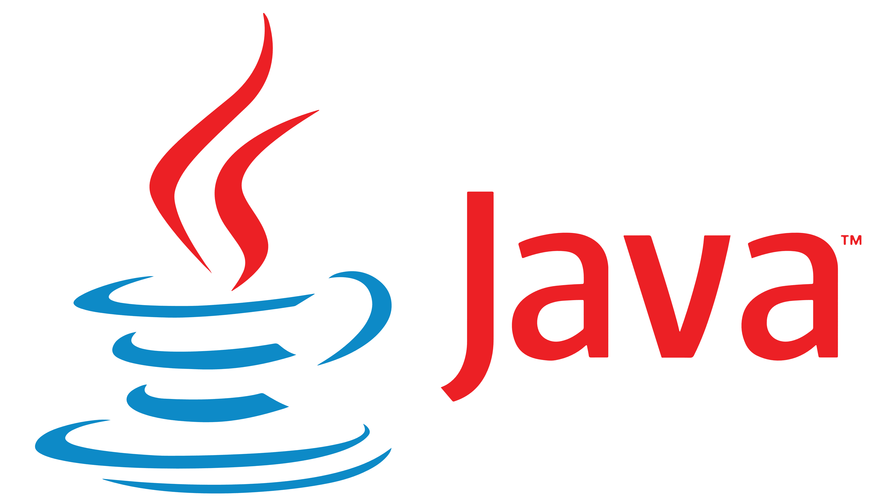

Linguagens disponiveis para Aula:
C#
O C# (leia-se C-Sharp), é uma linguagem de programação orientada a objetos, que foi desenvolvida pela Microsoft e faz parte da plataforma . NET. Embora a linguagem C# tenha sido criada do zero, foi baseada na linguagem C++ e tem muitos elementos da linguagem Pascal e Java.
Java
O Java é uma linguagem de programação orientada a objetos e é uma das linguagens mais utilizadas pelas empresas na atualidade no desenvolvimento de aplicações WEB e Mobile. O Java foi criado em 1995 na empresa Sun Microsystem por uma equipe chefiada por James Gosling, conhecido como o pai do Java.
Python

Python é uma linguagem interpretada, o que significa que ela traduz o código analisado e o executa. Na prática, a sua grande vantagem é que ela traz soluções para os mais variados tipos de problemas, sejam eles web, desktop ou mobile.
R
R é uma linguagem de programação multi-paradigma orientada a objetos, programação funcional, dinâmica, fracamente tipada, voltada à manipulação, análise e visualização de dados.